USB
for the
masses
- Introduction
- Act I: Comparison
- Act II: Down the Rabbithole
- Act III: Life is pain
- ACT IV: What if
Introduction
Name it
- USB 1.X
- USB 2.X
- USB 3.0 - USB 3.1 Gen 1 - USB 3.2 Gen 1x1
- USB 3.1 (Gen 2) - USB 3.2 Gen 2x1
- USB 3.2 (Gen 1x2 & Gen 2x2)
- USB 4
Connectors USB-A
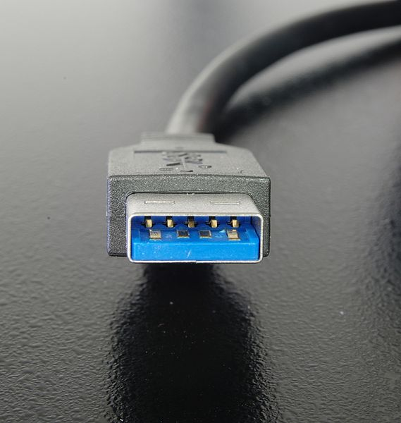 Picture by Rainer KnäpperLizenz Freie Kunst
Connectors USB-B
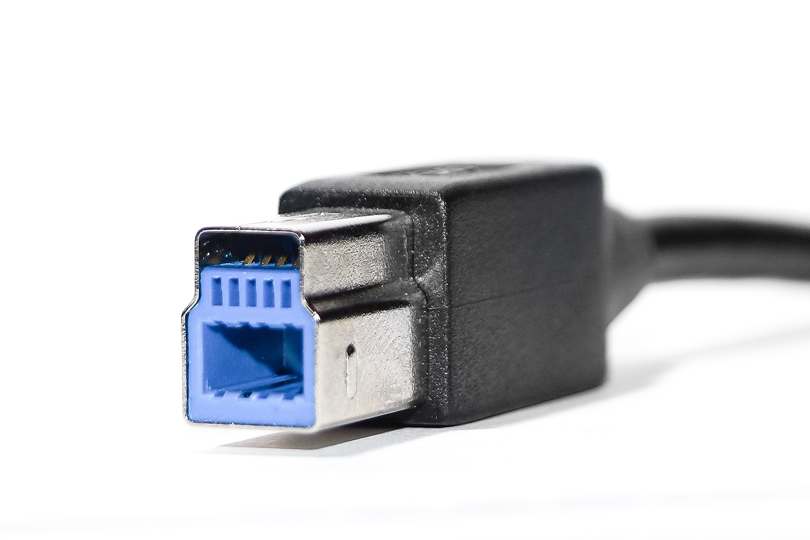 Picture by Anil ÖztasCreative Commons Attribution-Share Alike 3.0 Germany
Connectors USB-C
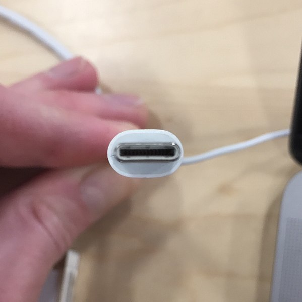 Picture by Wikimediauser Wikideas1Creative Commons Attribution-Share Alike 4.0 International
USB-OTG
USB On-The-GoAct I: Comparison
Speed
| Name | Introduction | Datarate |
|---|---|---|
| Low Speed | 1.0 | 0.15 MB/s |
| Full Speed | 1.0 | 1 MB/s |
| Hi(gh) Speed | 2.0 | 40 MB/s |
| SuperSpeed | 3.0 | 300 MB/s |
| SuperSpeed + | 3.1 | 900 MB/s |
| SuperSpeed + (2x) | 3.2 | 1800 MB/s |
Power
| Spezification | Voltage | Current | Power |
|---|---|---|---|
| USB 1.0 | 5 V | 0.1 A | 0.5 W |
| USB 2.0 | 5 V | 0.5 A | 2.5 W |
| USB 3.x | 5 V | 0.9 A | 4.5 W |
| USB-BC 1.2 | 5 V | 1.5 A | 7.5 W |
| USB-Type C | 5 V | 3 A | 15 W |
| USB-PD | 5 V - 20 V | 5 A | 100 W |
Power
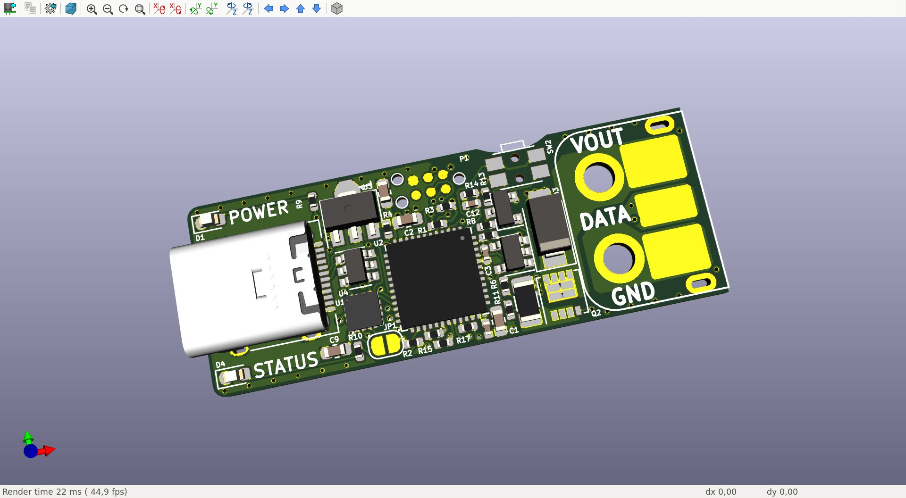 Picture by Fauth Niklas (@FauthNiklas) SRCPowerr
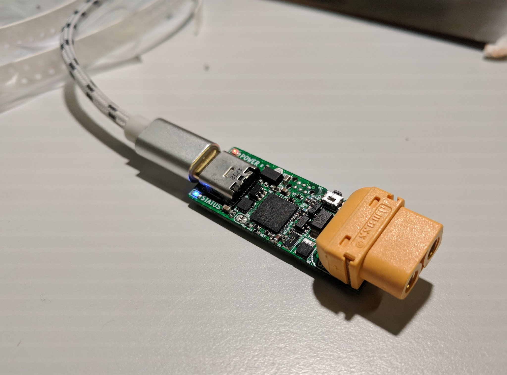 Picture by Fauth Niklas (@FauthNiklas) SRCPowerrr
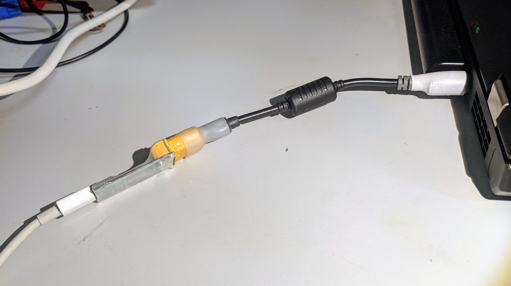 Picture by Jan Henrik (@JanHenrikH) SRCConnectorpins
 Picture by Simon Eugster
Picture by Simon Eugster GNU Free Documentation License
Connectorpins
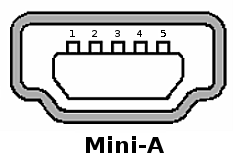 Picture by Wikimediauser DsimicCreative Commons Attribution-Share Alike 3.0 Unported
Connectorpins
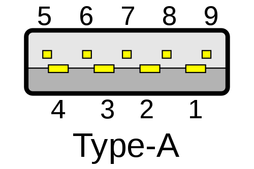 Picture by Wikimediauser NiridyaCreative Commons Attribution-Share Alike 3.0 Unported
Connectorpins
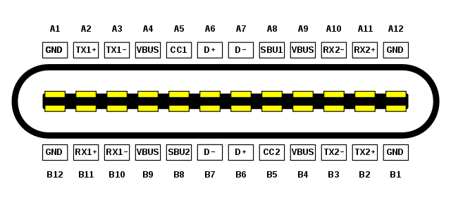 Picture by Wikimediauser Chindi.apCreative Commons Attribution-Share Alike 4.0 International
Story
about a mac and a switchAct II: Down the Rabbithole
Descriptor
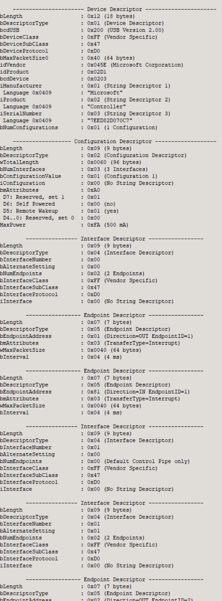Descriptor
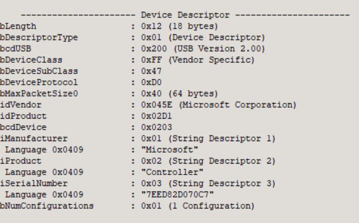Composite
- 1 Device? DeviceClass = specific Device
- more Devices? Deviceclass = custom, vendor or composite but with more interfaces.
- Interface Association Descriptors act like Devices
Every Detail
 Picture by PixelAnarchy
Picture by PixelAnarchy Pixabay License
Endpoints
- Endpoint 0 (2)
- Endpoints max low speed +2
- Endpoints other speeds +30 (2x15)
Descriptor
Composite
- 1 Device? DeviceClass = specific Device
- more Devices? Deviceclass = custom, vendor or composite but with more interfaces.
- Interface Association Descriptors act like Devices
Every Detail
Picture by PixelAnarchy Pixabay License
ACT III: LIFE IS PAIN
Get USB working
- Why is it that complicated?
- easier to use ft232 (~1,50€)
I thought...
Picture by stafforgreen0Pixabay License
feeling was right..
- only good on existing configurations (not many)
- hell if something is different (example: 2 CDCs)
- you have to write your own descriptors!
ACT IV: What if
Something like this?
using serialport = USB::CDC;
constexpr auto this_Device = USB::Device<serialport>{};
this_Device.init();
Fakefunctioncalls!
USBD_Init(&hUsbDeviceHS, &HS_Desc, DEVICE_HS);
USBD_RegisterClass(&hUsbDeviceHS, &USBD_CDC);
USBD_CDC_RegisterInterface(&hUsbDeviceHS, &USBD_Interface_fops_HS);
USBD_Start(&hUsbDeviceHS);
HID
USBD_Init(&hUsbDeviceHS, &HS_Desc, DEVICE_HS);
USBD_RegisterClass(&hUsbDeviceHS, &USBD_HID);
USBD_Start(&hUsbDeviceHS);
maybe combine classes?
using n = USB::NA_CLASS;
using b = USB::BA_CLASS;
constexpr auto this_Device = USB::Device<n,n,n,n,n,n,n,n,n,b>{};
this_Device.init();
Fakefunctioncalls!
USBD_Init(&hUsbDeviceHS, &HS_Desc, DEVICE_HS);
<<composite class wrapper START>>
NA
NA
NA
NA
NA
NA
NA
NA
NA
BATMAN
<<composite class wrapper END>>
USBD_Start(&hUsbDeviceHS);
what else?
- sizes at compiletime!
- easier cascading of devices
- easier implementation of new (special)classes
really really bad....
0x09, /* bLength: Configuation Descriptor size */
USB_DESC_TYPE_OTHER_SPEED_CONFIGURATION,
USB_CDC_CONFIG_DESC_SIZ,
0x00,
0x02, /* bNumInterfaces: 2 interfaces */
0x01, /* bConfigurationValue: */
0x04, /* iConfiguration: */
0xC0, /* bmAttributes: */
0x32, /* MaxPower 100 mA */
/*Interface Descriptor */
0x09, /* bLength: Interface Descriptor size */
USB_DESC_TYPE_INTERFACE, /* bDescriptorType: Interface */
/* Interface descriptor type */
0x00, /* bInterfaceNumber: Number of Interface */
0x00, /* bAlternateSetting: Alternate setting */
0x01, /* bNumEndpoints: One endpoints used */
0x02, /* bInterfaceClass: Communication Interface Class */
0x02, /* bInterfaceSubClass: Abstract Control Model */
0x01, /* bInterfaceProtocol: Common AT commands */
0x00, /* iInterface: */
/*Header Functional Descriptor*/
0x05, /* bLength: Endpoint Descriptor size */
0x24, /* bDescriptorType: CS_INTERFACE */
0x00, /* bDescriptorSubtype: Header Func Desc */
0x10, /* bcdCDC: spec release number */
0x01,
/*Call Management Functional Descriptor*/
0x05, /* bFunctionLength */
0x24, /* bDescriptorType: CS_INTERFACE */
0x01, /* bDescriptorSubtype: Call Management Func Desc */
0x00, /* bmCapabilities: D0+D1 */
0x01, /* bDataInterface: 1 */
/*ACM Functional Descriptor*/
0x04, /* bFunctionLength */
0x24, /* bDescriptorType: CS_INTERFACE */
0x02, /* bDescriptorSubtype: Abstract Control Management desc */
0x02, /* bmCapabilities */
/*Union Functional Descriptor*/
0x05, /* bFunctionLength */
0x24, /* bDescriptorType: CS_INTERFACE */
0x06, /* bDescriptorSubtype: Union func desc */
0x00, /* bMasterInterface: Communication class interface */
0x01, /* bSlaveInterface0: Data Class Interface */
/*Endpoint 2 Descriptor*/
0x07, /* bLength: Endpoint Descriptor size */
USB_DESC_TYPE_ENDPOINT , /* bDescriptorType: Endpoint */
CDC_CMD_EP, /* bEndpointAddress */
0x03, /* bmAttributes: Interrupt */
LOBYTE(CDC_CMD_PACKET_SIZE), /* wMaxPacketSize: */
HIBYTE(CDC_CMD_PACKET_SIZE),
0xFF, /* bInterval: */
/*---------------------------------------------------------------------------*/
/*Data class interface descriptor*/
0x09, /* bLength: Endpoint Descriptor size */
USB_DESC_TYPE_INTERFACE, /* bDescriptorType: */
0x01, /* bInterfaceNumber: Number of Interface */
0x00, /* bAlternateSetting: Alternate setting */
0x02, /* bNumEndpoints: Two endpoints used */
0x0A, /* bInterfaceClass: CDC */
0x00, /* bInterfaceSubClass: */
0x00, /* bInterfaceProtocol: */
0x00, /* iInterface: */
/*Endpoint OUT Descriptor*/
0x07, /* bLength: Endpoint Descriptor size */
USB_DESC_TYPE_ENDPOINT, /* bDescriptorType: Endpoint */
CDC_OUT_EP, /* bEndpointAddress */
0x02, /* bmAttributes: Bulk */
0x40, /* wMaxPacketSize: */
0x00,
0x00, /* bInterval: ignore for Bulk transfer */
/*Endpoint IN Descriptor*/
0x07, /* bLength: Endpoint Descriptor size */
USB_DESC_TYPE_ENDPOINT, /* bDescriptorType: Endpoint */
CDC_IN_EP, /* bEndpointAddress */
0x02, /* bmAttributes: Bulk */
0x40, /* wMaxPacketSize: */
0x00,
0x00 /* bInterval */
};